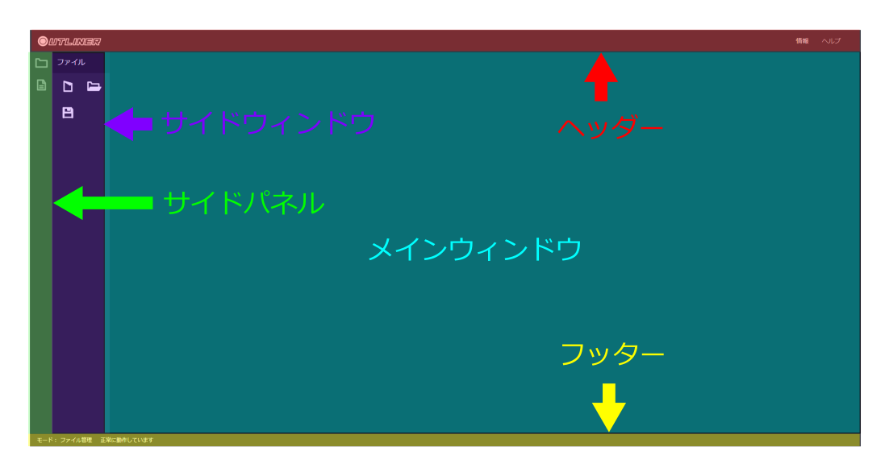
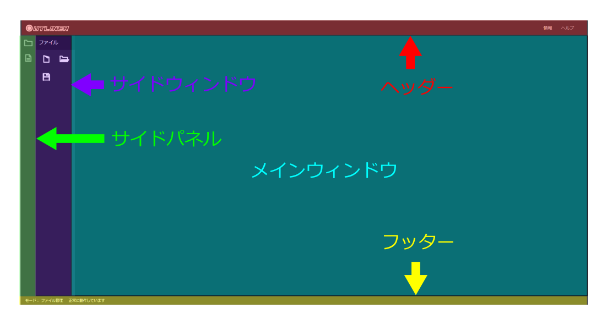
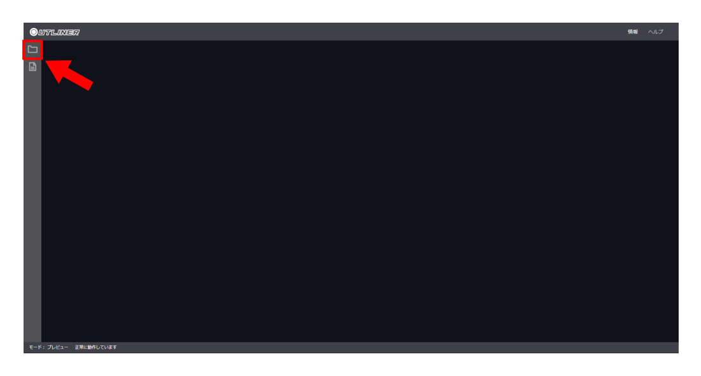
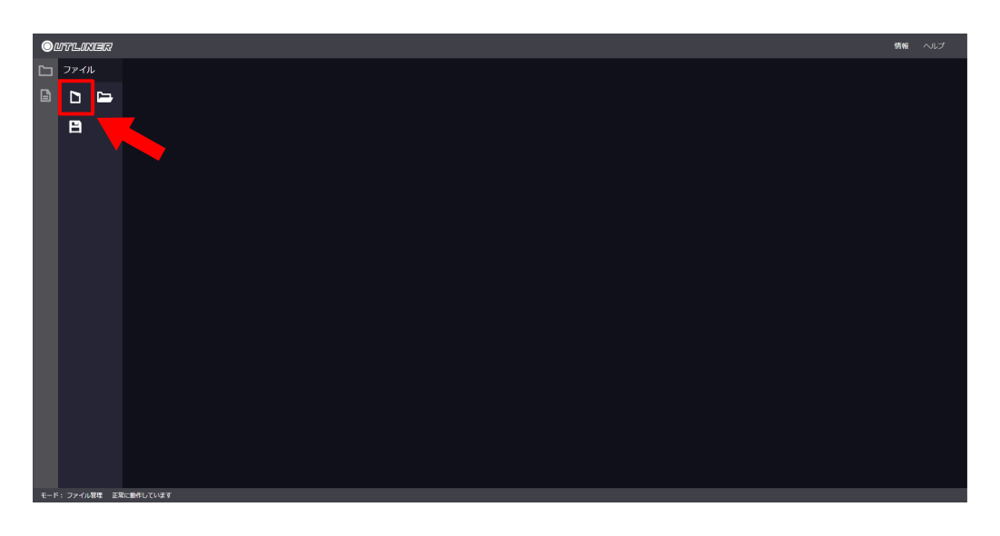
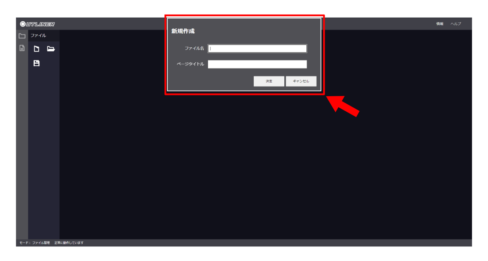
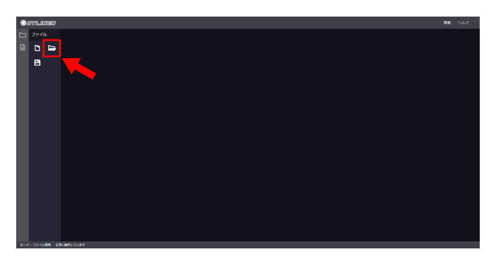
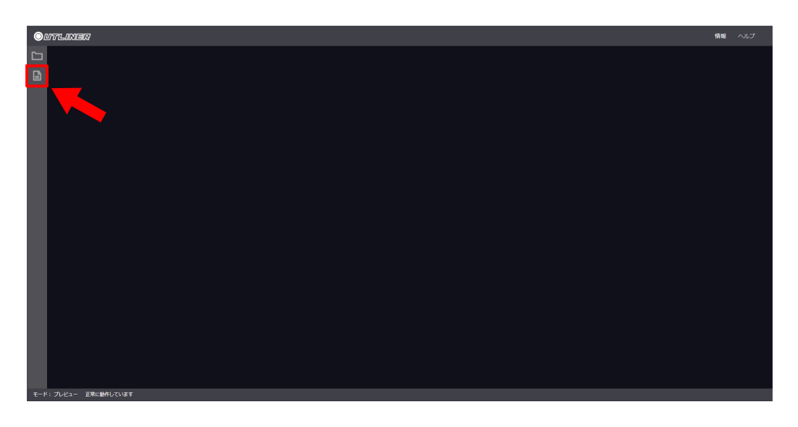
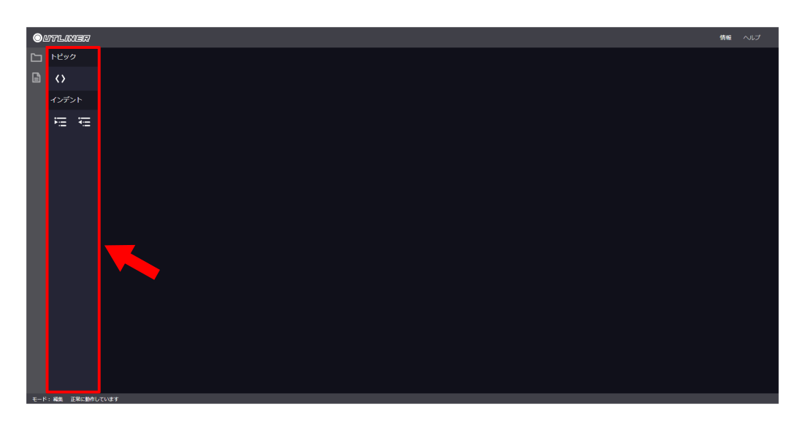

画面の説明
OUTLINERは以下の要素で構成されています。
- ヘッダー
- OUTLINERの基本情報にアクセスするためのエリアです。
- サイドパネル
- サイドウィンドウの切り替えを行うためのパネルです。
- サイドウィンドウ
- 各種機能を呼び出すためのウィンドウです。
- メインウィンドウ
- 編集中の文書が表示されるウィンドウです。
- フッター
- 各種メッセージが表示されるエリアです。
最終更新: 2023/4/24
OUTLINERは思考整理のためのアウトライン作成アプリです。
Webブラウザ上で動作しますが、入力内容はご使用の端末内にのみ保持されます。
使用にあたっては使用上の注意もご覧ください。
OUTLINERは以下の要素で構成されています。
ファイル管理ボタンをクリックします。
サイドウィンドウが表示されたら、新規作成ボタンをクリックします。
新規作成ダイアログが表示されたら、ファイル名とページ名を入力します。
ファイル名とページ名は現状この画面以外では設定できないので注意してください。
(後から編集する場合はHTMLファイルを直接書き換える必要があります)
入力が終わったら「決定」をクリックします。
新しい文書がメインウィンドウに表示されます。
ファイル管理ボタンをクリックします。
サイドウィンドウが表示されたら、ファイルを開くボタンをクリックします。
ファイル選択ダイアログが表示されたら、開きたいファイルを選択します。
「開く」をクリックします。
メインウィンドウに開いた文書の内容が表示されます。
ファイル管理ボタンをクリックします。
サイドウィンドウが表示されたら、保存ボタンをクリックします。

ファイルのダウンロードダイアログが表示されたら「保存」をクリックします。
ダウンロードフォルダにhtml形式で文書が保存されます。
編集したい文書をメインウィンドウに表示した状態で編集ボタンをクリックします。
メインウィンドウに表示されている文章をクリックすると編集できるようになっています。
サイドウィンドウのボタンも必要に応じて使用してください。
